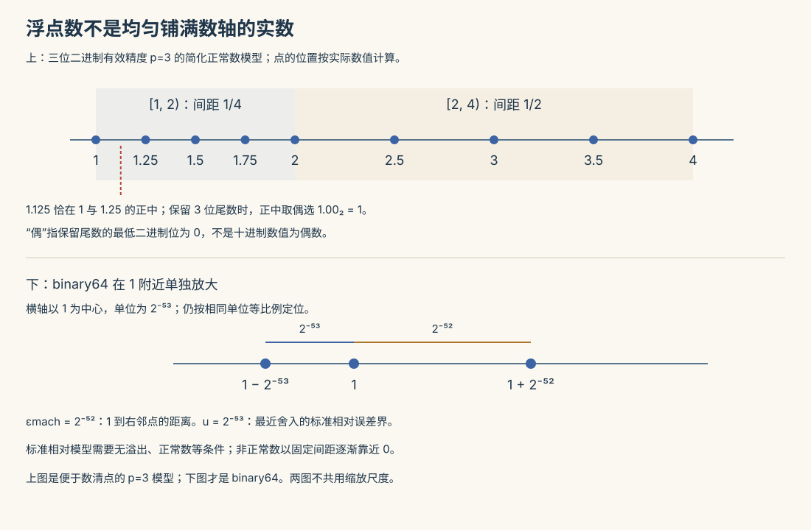

数值 I · 误差与数值稳定性
数值分析回答一个被纯数学掩盖的问题：公式在纸上对，在机器上算出来对吗？计算机用有限位数表示实数，每一步都在舍入——本页建立"误差从哪来、怎么放大、如何驯服"的基本语言。这一页的思维（条件数、灾难性相消、稳定改写）在深度学习的 fp16/fp8 时代重新成为一线技能。

1. 误差的来源与度量
四个来源：模型误差（数学模型 ≠ 现实）、观测误差（数据本身带噪）、截断误差（无穷过程砍成有限：Taylor 截断、迭代提前停）、舍入误差（有限位表示）。数值分析主管后两个。
度量：绝对误差 \(e = |\hat x - x|\)；相对误差 \(e_r = \frac{|\hat x - x|}{|x|}\)（跨量级比较用它）；有效数字 \(n\) 位 \(\approx\) 相对误差 \(\leq \frac12 \times 10^{1-n}\)。
2. 浮点数系统
IEEE 754 双精度：\(x = \pm 1.f \times 2^e\)，53 位尾数——机器精度 \(\varepsilon_{\text{mach}} = 2^{-52} \approx 2.2 \times 10^{-16}\)（相邻浮点数的相对间距；双精度约 16 位有效十进制数字）。每次四则运算结果被舍入：\(fl(a \circ b) = (a \circ b)(1 + \delta),\ |\delta| \leq \varepsilon_{\text{mach}}\)。
三条立刻反直觉的推论：浮点加法不满足结合律（求和顺序影响结果——大数吃小数：\(10^{16} + 1 - 10^{16} = 0\)）；比较浮点数不能用 ==（用容差）；长求和应从小到大加或用 Kahan 补偿求和。
🔗 深度学习语境：fp32/fp16/bf16/fp8 就是不同档位的 \(\varepsilon_{\text{mach}}\)（fp16 只有 \(\sim 10^{-3}\) 的相对精度、动态范围窄——混合精度训练里 loss scaling 防下溢、bf16 牺牲精度换范围，全是本节逻辑；comfy 课 04 讲的量化是更极端的同类交易）。
3. 灾难性相消（头号杀手）
两个相近的数相减，有效数字批量阵亡：\(x = 0.12345678\)，\(y = 0.12345612\)，各 8 位有效，差 \(6.6\times10^{-7}\) 只剩 2 位——前导位相同的部分在相减中携带的信息归零，相对误差放大约 \(\frac{|x|}{|x-y|}\) 倍。
对策是代数改写，绕开相减（必会三例）：
| 危险表达式 | 场景 | 稳定改写 |
|---|---|---|
| \(\sqrt{x + 1} - \sqrt{x}\)（\(x\) 大） | — | \(\dfrac{1}{\sqrt{x+1} + \sqrt{x}}\)（有理化） |
| \(\dfrac{-b + \sqrt{b^2 - 4ac}}{2a}\)（\(b > 0\) 且 \(b^2 \gg 4ac\)） | 求根公式小根 | 先算大根 \(x_1 = \frac{-b - \sqrt{\cdot}}{2a}\)，小根用韦达 \(x_2 = \frac{c}{a x_1}\) |
| \(1 - \cos x\)（\(x\) 小） | — | \(2\sin^2\frac{x}{2}\)（恒等式） |
（🔗 机器学习标准库里的 log1p、expm1、log-sum-exp 减最大值技巧（lab06 的 softmax 实现！）、交叉熵与 softmax 融合成一个算子——全是工业化的"稳定改写"。）
4. 条件数与稳定性：问题的错 vs 算法的错
两个必须分开的概念：
条件数（问题固有的敏感度）：输入扰动 \(1\%\)，输出扰动多少？可微函数 \(f\) 的相对条件数
（例：\(f = \sqrt x\) 的 \(\kappa = \frac12\) 良态；两相近数之差的 \(\kappa = \frac{|x|}{|x - y|}\) 巨大——第 3 节的灾难就是"病态问题"；矩阵版 \(\kappa(A) = \|A\|\|A^{-1}\|\) 下一页主演。）病态问题换任何算法都救不了——只能换问题的提法。
数值稳定性（算法的品行）：算法引入的误差是否被不必要地放大。同一问题不同算法品行可以天差地别（求根公式两种写法即例）。后向稳定的现代表述：算出的解是"某个邻近问题的精确解"——好算法把锅完全甩给输入扰动。
总账：最终误差 \(\lesssim\) 条件数 × (输入误差 + 算法等效扰动)。诊断次序：结果不对，先问问题病不病（条件数），再查算法稳不稳。
5. 典型例题
例 1（相消实测） 用求根公式解 \(x^2 - 10^8 x + 1 = 0\)：直接公式给小根 \(\approx 0\)（相消致全损）；韦达改写给 \(x_2 = 1/10^8 = 10^{-8}\)（精确到机器精度）。一行改写挽回 16 位有效数字。
例 2（条件数计算） \(f(x) = \ln x\) 在 \(x \approx 1\) 处：\(\kappa = \big|\frac{x \cdot 1/x}{\ln x}\big| = \frac{1}{|\ln x|} \to \infty\)——\(x\) 靠近 1 时对数是病态的（log1p(x-1) 存在的理由）。
例 3（求和顺序） 单精度下从大到小累加 \(\sum_{n=1}^{10^7} \frac1n\) 与从小到大加，结果差在第 4 位有效数字——小项先聚成气候再遇大项，信息不被吞。\(\blacksquare\)
下一页：线性方程组 \(Ax = b\) 的数值解——LU 分解、选主元的必要性、病态矩阵与迭代法。